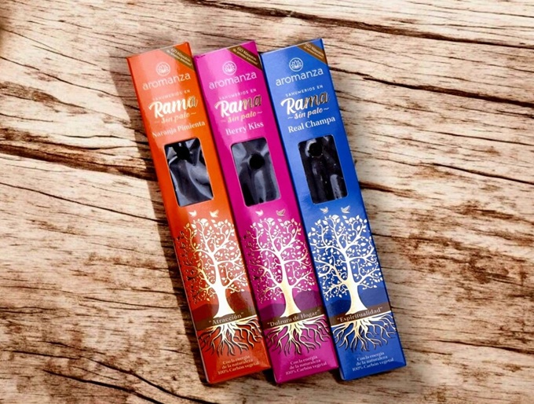

¿LA MAGIA DE LOS INCIENSOS?
Los inciensos, más que simples ambientadores, tienen un poder significativo para influir en nuestro estado de ánimo, la atmósfera de un espacio, y se asocian a prácticas espirituales y de bienestar. Su aroma puede evocar emociones, transportarnos a recuerdos y crear un ambiente relajante y equilibrado. Además, se le atribuyen beneficios para la salud, como la mejora de la circulación, la reducción de la ansiedad y el apoyo a la concupiscencia del sueño. Se pueden identificar las varillas como elementos muy faciles de utilizar en el dia a dia. Los mismos disponene d eun podeer magico el cual se divide segun su forma y aroma, esto es lo que veremos puntualmente la proxima semana.